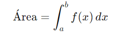
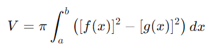
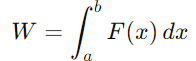

Proyecto final
Aplicaciones de la Integral: Área bajo una curva, volúmenes y problemas de aplicación
Cálculo Diferencial e Integral
Alumna:
Sanchez Gonzalez Luz Clarita
Profesor:
Carballo Ojeda Carlos Orlando
Definición de la integral:
Explicación breve de la integral como la acumulación de cantidades y su importancia en el cálculo de áreas, volúmenes y más.
Este módulo explorará las diversas aplicaciones de la integral, desde el cálculo de áreas bajo una curva hasta
el análisis de volúmenes de sólidos y problemas prácticos relacionados.
Descubriremos cómo la integral puede ser una herramienta poderosa para resolver una amplia gama de desafíos matemáticos.
Objetivos de la presentació:
1.Entender cómo calcular el área bajo una curva utilizando la integral.
2.Aprender a calcular volúmenes de sólidos de revolución.
3.Aplicar la integral en problemas prácticos.
Área bajo una curva
Definición:
El área bajo una curva se puede calcular como la integral definida de una función f(x) en un intervalo [a, b].
Aplicaciones
Esta técnica se usa para determinar áreas de regiones planas, como figuras geométricas o áreas bajo curvas de funciones.
Fórmula:
Ejemplo:
Mostrar un ejemplo simple con una función 𝑓 (𝑥)=𝑥2f(x)=x 2 y calcular el área bajo la curva en un intervalo específico.
Volúmenes de sólidos de revolución
Definición:
Un sólido de revolución se genera al rotar una curva alrededor de un eje.
La integral puede usarse para calcular el volumen de sólidos generados por la rotación de una curva alrededor de un eje.
Método del disco:
Explicar cómo calcular el volumen utilizando el método del disco.
Método de la arandela:
Cuando hay un agujero en el sólido.
Ejemplo:
Clcular el volumen de un sólido al rotar 𝑓(𝑥)=𝑥2f(x)=x2 alrededor del eje x.
Problemas de aplicación
Introducción:
La integral es una herramienta poderosa para resolver problemas en la física, economía, ingeniería, etc
Ejemplo de aplicación física:
Calcular el trabajo realizado por una fuerza variable a lo largo de una distancia.
Ejemplo de aplicación económica:
Calcular el costo total de producción dado un costo marginal.
Áreas entre Curvas
Encontrar el área de regiones planas con formas irregulares utilizando integrales.
Áreas Irregulares
Calcular el área entre dos curvas en un intervalo dado.
Áreas de Figuras Geométricas
Determinar el área de figuras geométricas como círculos, elipses y polígonos.
Problemas de Aplicación: Volúmenes de Sólidos
Volúmenes de Sólidos de Revolución
Calcular el volumen de sólidos generados por la rotación de una curva alrededor de un eje.
Volúmenes de Sólidos Definidos por Secciones
Determinar el volumen de sólidos cuya forma está definida por secciones transversales.
Volúmenes de Sólidos Irregulares
Encontrar el volumen de sólidos con formas más complejas utilizando técnicas de integración.
Problemas de Aplicación: Longitud de Arco
Definición
La integral también se puede utilizar para calcular la longitud de un arco de curva.
Aplicaciones
Esto es útil en geometría, física y otras áreas donde se necesita medir la longitud de trayectorias curvas.
Ejemplos
Cálculo de la longitud de un arco de círculo, una parábola o una función trigonométrica.
Problemas de Aplicación: Centro de Masa
Masa
La integral se puede usar para calcular la masa total de un objeto o sistema.
Coordenadas
También se puede utilizar para encontrar las coordenadas del centro de masa.
Densidad
La integral ayuda a determinar la densidad de un objeto o sistema.
Conclusión
En este módulo, hemos explorado las diversas aplicaciones de la integral en el campo del Cálculo Diferencial e Integral. Desde el cálculo de áreas y volúmenes
hasta la resolución de problemas prácticos, hemos visto cómo esta poderosa herramienta matemática puede ser utilizada en una amplia gama de contextos.
Esperamos que estos conceptos hayan sido claros y que puedas aplicarlos con confianza en tus estudios y proyectos futuros.
Referencias:
Libros y artículos recomendados:
Stewart, J. (2008). Cálculo: Trascendentes tempranas.
Larson, R., & Edwards, B. H. (2013). Cálculo.
https://www.studocu.com/es-mx/document/itec-universidad/instrumentacion/actividad-area-bajo-la-curva/56315159
https://prezi.com/xci8ddgsza8e/aplicacion-de-la-integral-del-area-bajo-la-curva/
Recursos adicionales en línea.
Gracias...